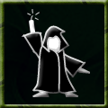

|
 |
Golem Assembly This is the art of constructing and maintaining a working golem. Golems are artificial beings made from a variety of parts and imbued with life drawn directly from their creator. Even though they are mindless constructs, do not underestimate them. A well-crafted golem can be efficient and dangerous in carrying out its master's wishes. Command: assemble <part> OR assemble golem This ability is based on:
Explanation of commands:
|
Detect Traps | Mining | Demolitions | Task Master | Basic Structures | Advanced Structures | Basic Traps | Advanced Traps | Golem Assembly